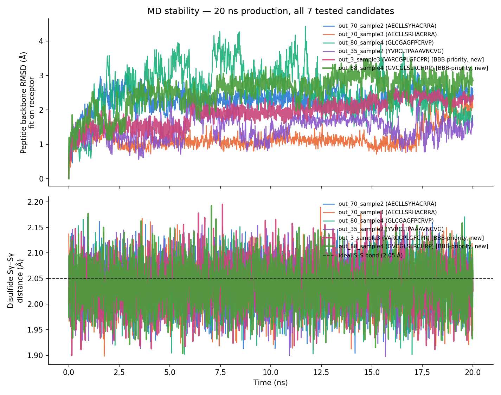
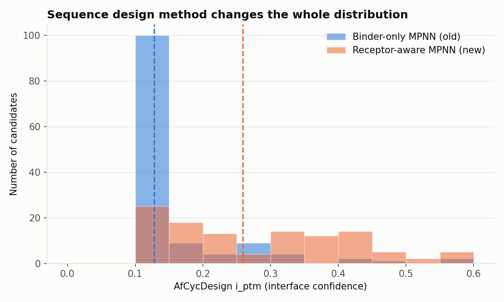
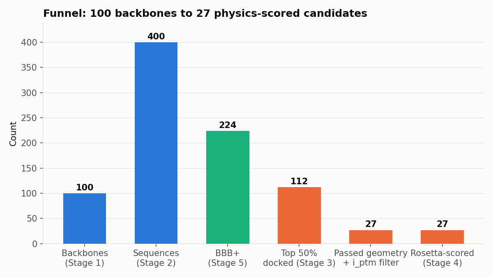

MD validation — all 7 tested candidates

20 ns unconstrained GROMACS MD, receptor backbone position-restrained, explicit TIP3P solvent. 5 candidates selected for OXTR interface confidence, 2 added later for leading BBB probability once Stage 6 reprioritized the shortlist toward permeability.
Candidate comparison
| Candidate | Sequence | Selected for | BBB prob. | OXTR i_ptm | dG_sep | MD RMSD mean/max (Å) | MD S–S mean/max (Å) | Selectivity margin |
|---|---|---|---|---|---|---|---|---|
| out_3_sample3 | VARCGPLGFCPR | BBB | 0.915 | 0.578 | −41.0 | 1.91 / 2.70 | 2.04 / 2.20 | +0.009 |
| out_88_sample4 | GVCGLSLRCHRP | BBB | 0.836 | 0.393 | −42.3 | 2.53 / 3.49 | 2.03 / 2.19 | −0.048 |
| out_98_sample2 | MVCGPFPLALCRRP | Interface | 0.544 | 0.401 | −47.2 | 2.83 / 4.09 | 2.03 / 2.18 | −0.095 |
| out_70_sample3 | AECLLSRHACRRA | Interface | 0.497 | 0.475 | −47.6 | 1.18 / 2.69 | 2.04 / 2.19 | −0.066 |
| out_80_sample4 | GLCGAGFPCRVP | Interface | 0.477 | 0.442 | −49.1 | 2.57 / 4.43 | 2.04 / 2.17 | −0.126 |
| out_70_sample2 | AECLLSYHACRRA | Interface | 0.453 | 0.574 | −51.5 | 2.29 / 3.09 | 2.04 / 2.17 | +0.059 |
| out_35_sample2 | YVRCLTPAAAVNCVG | Interface | 0.441 | 0.403 | −51.4 | 1.45 / 2.61 | 2.03 / 2.16 | −0.245 |
Selectivity margin = i_ptm(OXTR) − max(i_ptm vs. AVPR1A/1B/2). Sorted by BBB probability. out_3_sample3 now leads on BBB probability, MD stability, and OXTR score simultaneously — the strongest all-round candidate so far, though its selectivity margin is thin (+0.009).
i_ptm distribution shift

Before/after the ProteinMPNN receptor-blindness fix (Stage 2).
Pipeline funnel

100 backbones → 400 sequences → 27 defensible shortlist candidates.
Selectivity vs. related receptors (Stage 7)
27 shortlisted candidates cofolded against AVPR1A, AVPR1B, and AVPR2 (81 runs, AfCycDesign). AVPR2 (renal, antidiuretic) is the most repeated off-target hit — out_35_sample2 and out_88_sample2 both show AfCycDesign preferring AVPR2 over OXTR outright (margins −0.245 and −0.292). Best clean margins in the full 27: out_5_sample4 (+0.129), out_30_sample4 (+0.087), out_22_sample4 (+0.086) — none yet MD-tested.